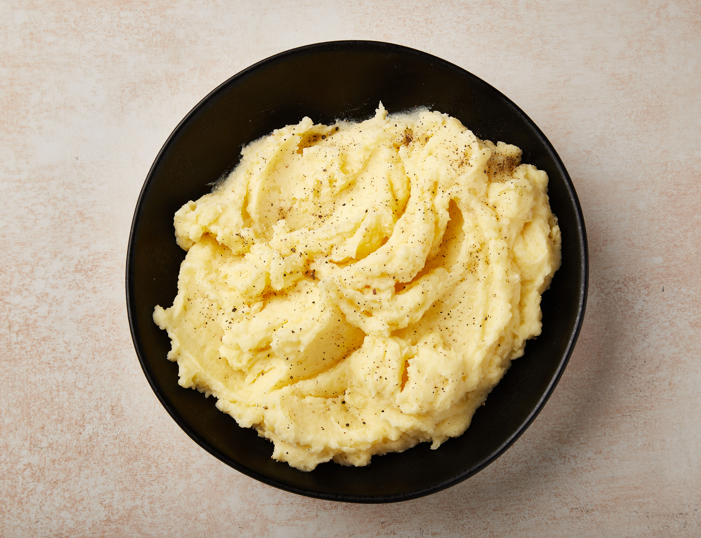

Mashed Potatoes

Ingredients
Serves 2
- 5 small potatoes
- 2 tablespoons butter
- garlic
- sour cream
- salt
- pepper
- Italian seasoning
Steps
- Dice the potatoes into small cubes.
- Place potatoes in a medium pot along with whole cloves of garlic. Measure the garlic with your heart.
- Add water to the pot and cover potatoes by about 2 inches. Salt generously.
- Bring the pot to a rolling boil and leave uncovered for 10-12 minutes. Stir occasionally.
- Drain the pot. Add butter, two good spoonfuls of sour cream, salt, pepper, and Italian seasoning.
- Mash the potatoes, incorporating the butter, sour cream, and seasoning. You can use a wooden spoon and mash against the sides of the pot.
- Serve.
Go Back